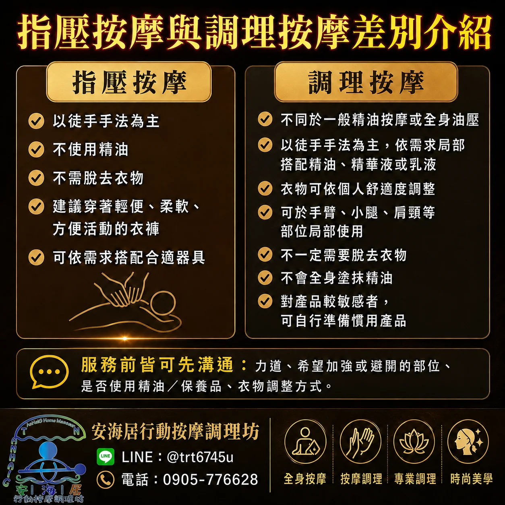
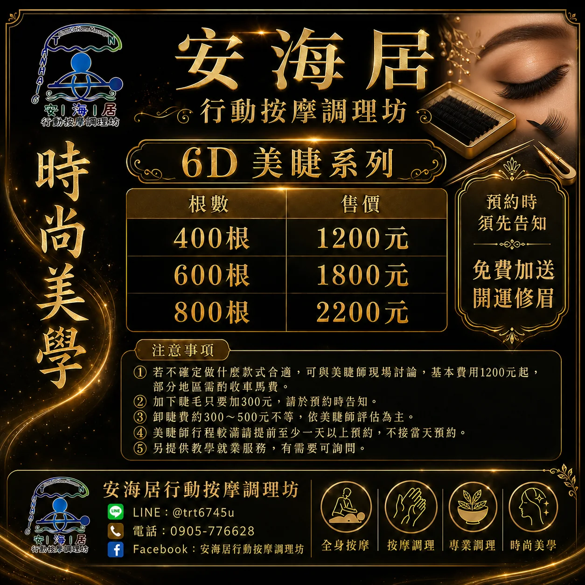
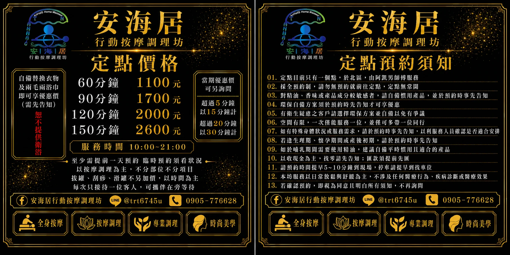

指壓按摩
以徒手手法為主，不使用精油，不需更換衣物。建議穿著輕便、柔軟、方便活動的衣褲。
- 適合日常疲勞、久坐久站
- 可依需求加強肩頸、背部、腿部等區域
- 如需使用工具，會依現場狀況與溝通安排
從徒手按摩、調理按摩到精油、美學與美睫服務，這一頁把原本看起來像公告的資訊，重新整理成真正方便閱讀的服務目錄。
以徒手手法為主，不使用精油，不需更換衣物。建議穿著輕便、柔軟、方便活動的衣褲。
依需求局部搭配精油、精華液或乳液，不一定全身塗抹，能更聚焦在特定部位與感受。
基本／一般精油 NT$1,200／小時起；特調精油 NT$1,400／小時起；自備精油服務以 NT$1,200／小時起計算。
包含臉部美學、精緻保養、6D 美睫等項目。建議提早預約，以利美容師行程安排。

安海居原始素材中有特別說明兩者差異。網站這裡用更清楚的方式整理：如果希望保留衣著、以徒手按壓為主，通常會選指壓；若希望局部搭配精油、保養品與滑順的觸感，則較適合調理按摩。
以下為常見的時間與部位組合，方便第一次預約快速理解內容。實際價格仍需加上對應時段、車馬費與當次確認項目。
頭頸肩 15 分＋腳底按摩 45 分，適合想先舒緩上半身，再搭配足部放鬆的客戶。
頭頸肩 30 分＋全身 60 分，適合需要較完整全身放鬆安排者。
| 套餐 | 時間組合 | 參考價格 |
|---|---|---|
| A | 頭頸肩 15 分＋腳底按摩 45 分 | 乳液 NT$1,000／精油 NT$1,200 |
| B | 頭頸肩 30 分＋腳底按摩 60 分 | 乳液 NT$1,500／精油 NT$1,800 |
| C | 頭頸肩 15 分＋上半身 45 分 | 指壓 NT$1,000／精油 NT$1,200 |
| D | 頭頸肩 30 分＋全身 60 分 | 指壓 NT$1,500／精油 NT$1,800 |
| E | 頭部調理 40 分＋頸部 20 分 | 精油（精華液）NT$1,200 |
| F | 骨盆＋下半身調理，共 60 分 | 精油 NT$1,200 |
| G | 頭＋全身＋骨盆調理，共 120 分 | 精油 NT$2,400 |
| H | 全身調理＋足部調理，共 120 分 | 精油 NT$2,400 |
除了按摩與調理服務，安海居也提供美學項目。這些項目與一般到府按摩的客群可能不同，因此網站刻意獨立成一個段落，讓訊息更清楚。


定點服務出現在較早版本的資料中。為了避免網站造成「目前一定開放」的誤解，這裡保留資訊，但清楚標示需於預約時再次確認。